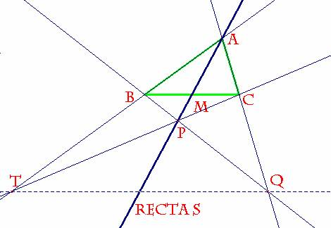
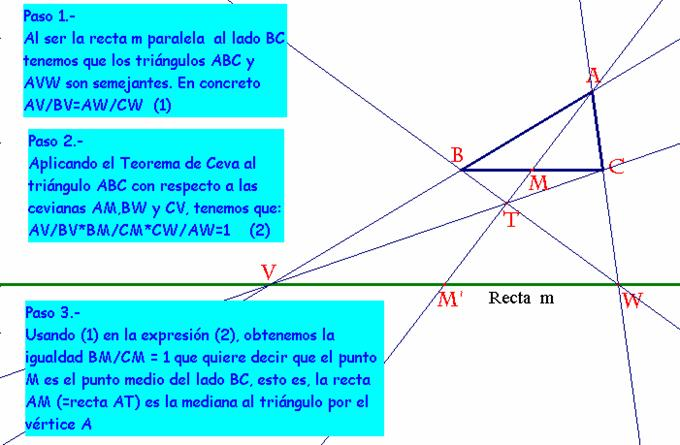

Problema 68.-
Dado
un triángulo ABC,
a)Tracemos la recta s que contiene a la
mediana AM. Tomemos P, un punto cualquiera de s.
Tracemos las
rectas BP, y CP, que cortarán a AC y a AB, o sus prolongaciones, en Q y T. Demostrar que TQ es paralela a BC.
Sol:
|
 |
|
Apliquemos el Teorema de Ceva al
triángulo ABC dado, ya que las tres cevianas construidas concurren en el
punto P. Esto significa que:
(1), pero como la recta s es la
mediana correspondiente al vértice A, el punto M será el punto medio del lado
BC. Así será MB=MC, y la expresión (1)
adoptará la forma: (2) es decir, existe
una proporción entre los dos pares de lados que forman el mismo ángulo A Por tanto, los triángulos ABC y ATQ serán
ambos semejantes y el lado TQ será homólogo al lado BC por la homotecia de
centro A y razón k. De este modo queda probado que TQ es paralela a BC. |
b)
Sea la recta m es paralela a BC cortando a AB o su prolongación en V, y a AC o
su prolongación en W.
Construyamos las
rectas BW y CV, que se cortarán en T.
Demostrar que la
recta AT contiene a la mediana al triángulo por el vértice A.
|
 |
F. Damián Aranda Ballesteros, profesor de Matemáticas del IES Blas Infante en Córdoba